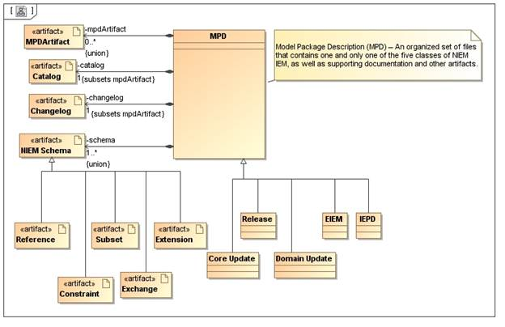
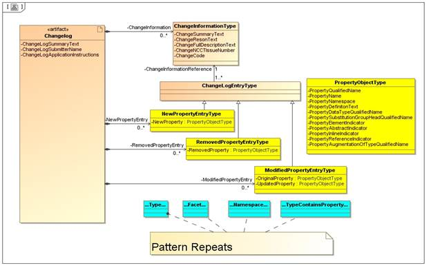
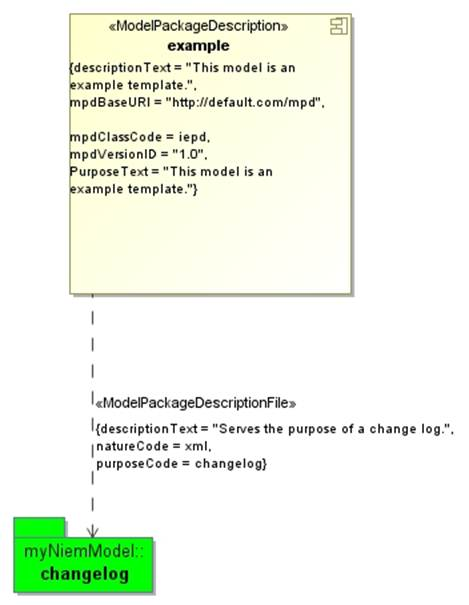
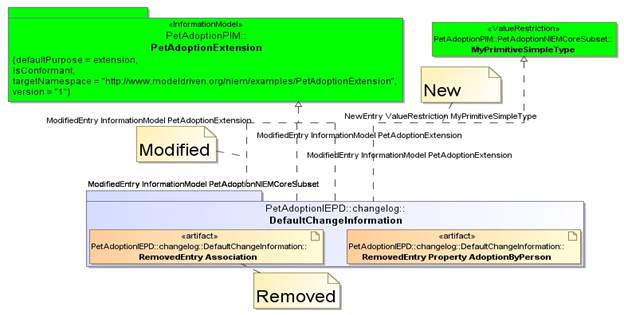
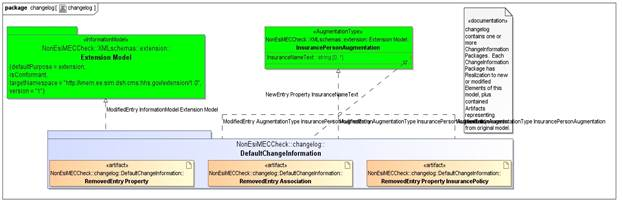
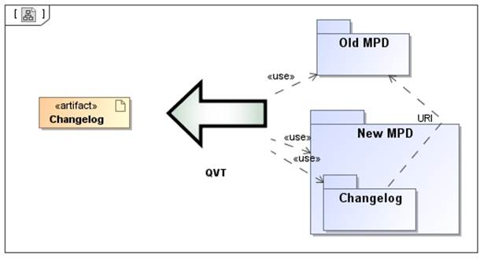

Change Log
From the MPD Specification:
A variety of
documentation files may be incorporated into a NIEM MPD. However, in addition
to XML schemas, there are only two mandatory documentation artifacts required
by every MPD: the mpd-catalog and the change log. ….
The change log provides a history of modifications.
…
Although the version identifier is useful for a fast and visual
indication of the state of an MPD relative to others, it only provides a fairly
generalized indication of the volume, complexity, and impact of changes that
have been applied since a previous version. Of course, a change log is required
to ensure a more specific accounting of changes from one version to another.
Once published, NIEM releases always exist. This ensures that IEPDs and
EIEMs built from them will always be stable, and may be updated to a new NIEM
release only when convenient or absolutely necessary to take advantage of new
or modified data components. Though not recommended, the NIEM program does not
prohibit a developer from building an IEPD based on a NIEM release that is
older than the most current version. There may be potential disadvantages
related to interoperability levels achievable with others developing to the
latest release. Nonetheless, an older version might meet the business needs of
a particular organization quite well.
In spite of this built-in stability, the NIEM
architecture is designed to evolve as requirements change. New versions of
reference schema sets such as NIEM releases, core updates, and domain updates
can have significant impacts on future IEPDs and EIEMs. Developers must
understand in detail how changes will affect their IEPD and EIEM products and
the tools used to build them. To work effectively, tools for domain content
development, impact analysis, migration between releases, etc. must be able to
digest formal change logs. A formal change log is also essential to efficiently
process and integrate new and changed content into NIEM for new releases, and
to simultaneously maintain multiple versions of NIEM for users. All of the
foregoing reasons dictate that NIEM require a normative change log for
reference schema sets.
[Rule 4-12] Every MPD that is a reference schema set
(i.e., NIEM releases, core updates, and domain updates) MUST contain an XML
change log artifact that:
• Validates with the NIEM change log schemas (mpd-changelog.xsd and niem-model.xsd).
• Records changes to previous reference schemas that
this MPD represents.
• Bears the file name "changelog.xml".
• Resides in the root directory of the MPD.
…
Since the schemas are the authority for a release or
update and because almost all tool support depends on the schemas, the change
log is only designed to audit transactional change to the schemas in the
reference set. There is no provision for logging changes to support
documentation or other non-schema artifacts. Non-schema changes are handled
non-normatively in the form of release notes.
…
[Rule 4-13] Every MPD
that is an IEPD or EIEM MUST contain a change log artifact that:
• Records changes to previous IEPD or EIEM schemas
that this MPD represents.
• Begins with the substring "changelog".
• Resides in the root directory of the MPD.
… use of mpd-changelog.xsd is encouraged for IEPD and EIEM schemas…
…
The initial version of an IEPD or EIEM would not
likely require a change log. However, for consistency of validation and to help
facilitate automatic processing of IEPDs and EIEMs by tools:
[Rule 4-14] The initial
version of an IEPD or EIEM MUST contain a change log artifact with at least one
entry for its creation date.
The requirement that every MPD must include a Change Log is reflected in our depiction of an MPD:

The MPD specification references the NIEM Change Log schemas. Change Logs are required to conform with those schemas for NIEM release, core updates, and domain updates. The MPD recommends that those schemas also be used for IEPD and EIEM forms of MPD. We provision change logs for all forms of MPD which conform to those NIEM Change Log schemas.
The following figure is a conceptual representation of the Change Log schemas:
· The root element is Changelog, which contains
o Some meta information
o A list of change information
o A list of New*Entrys
o A list of Remove*Entrys
o A list of Modified*Entrys
· A Change Information:
o Contains meta information about a change
o References Change Log Entrys
· A Change Log Entry may be:
o A New*EntryType. This represents a component in the current MPD which did not exist in the previous MPD. Contains a New* element of type *Type, as defined in the NIEM-Model schema.
o A Removed*EntryType. This represents a component in the previous MPD which does not exist in the current MPD. Contains a Removed* element of type *Type, as defined in the NIEM-Model schema.
o A Modified*EntryType. This represents a component in the current MPD which has some change of characteristic from the previous MPD. Contains an Original* element of type *Type, as defined in the NIEM-Model schema, which characterizes the component from the previous MPD. Contains an Updated* element of type *Type, as defined in the NIEM-Model schema, which characterizes the component from the current MPD.
· The * in the above description represents a kind of NIEM-Model component. The pattern for Change Log Entrys is the same for each kind of NIEM-Model component. The kinds are:
o Property. Represents a (named) top level element or attribute.
o TypeContainsProperty. Represents a usage or reference to a Property from the content of a ComplexType.
o Type. Represents a named top level Type (a SimpleType or ComplexType).
o Namespace. Represents a Schema, characterized by its URI, prefix, and version.
o Facet. Represents a Facet, characterized by its type, category, value, and definition.

An MPD change log is modeled as a UML Package. It is modeled as part of an MPD via the <<ModelPackageDescriptionFile>> Usage from the <<ModelPackageDescription>> Component to the change log Package:
· The purpose is changelog
· The nature is xml

The MPD Change Log package:
· Has a URI set to the previous base-lined version of the model. This is nominally a relative URI, to improve portability between local development environments. An absolute URL may be used when the base-lined model has been archived to a commonly accessible resource location.
· Contains one or more Change Information packages. Each of these packages represents a ChangeInformationType from the change log schema model. All changes are with respect to a Change Information package:
o New entries are represented as Realizations from the Change Information package to the new model Element.
o Removed entries are represented as contained Artifacts. The File Name of the Artifact is set to the id of the model Element in the base-lined model.
o Modified entries are represented as Realizations from the Change Information package to the modified model Element in the current model. In this case, the id of the modified model Element in the current model will be the same as the id of the corresponding model Element in the base-lined model.
The information content of the NIEM-Model *ObjectTypes are derivable from the model Elements referenced.

The following steps may be used to create a new MPD version:
· Open the base-lined version of the MPD: From Magic Draw main menu, FileèOpen Project… Complete model selection dialog.
· Save the new version: From Magic Draw main menu, FileèSave Project As… Complete dialog, using a different model name.
· Select the <<ModelPackageDescription>> Component, right clickèSpecification
· In the Specification Dialog, set the tag mpdVersionID to a new value.
· Modify the model, perhaps removing elements, adding elements, and modifying elements.
· Save the model: From Magic Draw amin menu, FileèSave Project
A Change Log may be created using the following procedure:
• Select the top level Package with applied NIEM-UML Profiles
• Right-click: NIEMèadd MPD Changelog. This will result in a File Selection dialog.
• In the File Selection Dialog, select previous base-lined version of model
• The models are analyzed for differences, and the following are added to the model:
• The changelog Package.
• A <<ModelPackageDescriptionFile>> Usage between the <<ModelPackageDescription>> Component and the new changelog Package.
• A default Change Information Package nested within the changelog Package.
• Realizations and Artifacts representing all the applicable differences between the models. These elements are added to the default Change Information Package.
Additional Change Information Packages may be manually created and the Realizations/Artifacts representing change may be moved to the new Change Information Packages. This enables fine-grained assignment of model element changes to discrete change information occurrences. 
The change log is provisioned as part of the FileèExport toèNIEM MPD action. The provisioning process uses information from both the current version of the MPD and the base-lined version of the MPD:
• New: entry information is exclusively from new model
• Removed: original entry information is exclusively from base-lined model
• Modified: entry information is from both the new model, and the base-lined model

The modeled change log may be updated at any time to reflect recent changes in the new version. The procedure for performing the update:
• Select the changelog Package.
• Right-clickèNIEMèrefresh MPD Changelog
• This will result in additional changes being recorded in the default Change Information Package. Any changes which were backed out will be removed from the change log. Changes which are still relevant will be retained and remain allocated to their Change Information Package owner.
All MPDs are required to contain a change log. However, the change log for an initial version of an MPD contains only an entry for the creation date. The initial version change log is normally part of a new MPD project template and would not require additional action. In the event that the MPD does not contain a change log, the following procedure may be used to create an initial version MPD change log:
• Select the top level Package with applied NIEM-UML Profiles
• Right-click: NIEMèadd Initial Version MPD Changelog.
• An empty changelog Package is created, along with the <<ModelPackageDescriptionFile>> Usage between the <<ModelPackageDescription>> Component and the new changelog Package.